Overview
I know what you are thinking — "oh no, not another chess project." But hear me out.
While lots of work is dedicated to evaluating positions or legal moves, I have yet to see a project evaluating possibilities.
Chess grandmasters can look at a board and (to some extent) determine whether such a game could exist. Their experience and pattern recognition allow them to assess whether a board state is possible. The distinction between legal and possible is crucial here.
Key insight: a state can be legal but unreachable. For example, a specific pawn structure might follow all the rules of chess, but given the turn number, there's no possible sequence of moves that could produce this arrangement.
Core challenge: can I create a system that accurately classifies whether a given board state is reachable?
Problem Statement
| Aspect | Details |
|---|---|
| Task | Binary classification — determine if a chess board state is possible or unreachable |
| Scope | Identify states that are legal but unreachable (not structural illegality such as an improper number of pieces) |
| Key inputs | Board state, turn number |
Related Work
There exist approaches close to what I'm looking for, most notably retrograde analysis, where one mathematically searches and computes a sequence of moves to reach a given board state. However this is not computationally possible beyond around 25 turns. A similar story can be seen on the other end of the spectrum — chess endgames are a mature area of research, and chess is considered "solved" when there are 7 or fewer pieces on the board. That is not to say there do not exist unreachable arrangements with such piece counts, but my paper will not delve into this area; rather it seeks to amend the mid-game gap between these two fields.
The problem as a whole is PSPACE-complete. A learned approximator cuts out the long computational process that standard retrograde analysis methods need for each check.
Existing Approaches
- Retrograde analysis — focuses on pawn structure analysis
- Proof games — generates a history of how a game reached a position (computationally infeasible at scale)
- Exhaustive search — mathematical methods that search all possible game arrangements (again, computationally infeasible at scale)
Key Resources
External links
- Natch proof game solver
- Texel proof game documentation
- Chess neural networks research
- Problem size estimation
- Chess 960 Lichess dataset — all back row pieces randomised at start
- ChessPositionRanking — relevant repo with a heuristic-based legality checker
Background papers
Alwer Saleh thesis (2022–2023) · Chess position evaluation using radial basis functions · CNN topologies · ConvChess · End-to-end learning · ImageNet classification · ResNet · Retrograde analysis · Retrograde complexity · The vanishing gradient problem · VGG. (PDFs go in pdfs/ — see the README there.)
Problem Complexity Estimates
We know unreachable boards exist, but just how many are there? Thankfully others have calculated this, giving us a good picture of the scale.
| Estimate | Value | Notes |
|---|---|---|
| Shannon's piece-count-respecting estimate | ~4.63 × 1042 | Correct piece types, ignores illegality |
| Legal diagrams (upper bound, no promotion) | ~4 × 1037 | Gourion's result |
Meaning there are roughly 100 000 times more possible boards than reachable boards.
Dataset
| Type | Source |
|---|---|
| Possible states | Lichess dataset |
| Unreachable states | Synthetically generated |
Lichess has an enormous amount of data, more than I could ever hope to process. For this project I have taken one single month of the Lichess dataset and processed 100k games. The reasoning for this number will be clear later.
Unreachable State Generation
Apply perturbations to reachable positions (e.g. from simulated or real games) to produce synthetic unreachable states. Core perturbation ideas by category:
1. Pawn structure
- Pawn swap — swap two same-colour pawns on different files (breaks file history).
- Double pawn — copy a pawn to an adjacent file so two same-colour pawns share a file.
- Pawn teleport — move a pawn to another file or rank without a legal path (e.g. e2→e5 in one step).
- Wrong count / placement — add or remove pawns, put a pawn on rank 1/8 (without promotion), or create impossible passed/blocked structures.
2. Turn number
- Turn truncation — take a position from move 40 and label it as move 10 (or 5); many arrangements are impossible that early.
- Turn inflation — label an early-looking position (e.g. many pawns, few pieces moved) as move 60.
- Minimum-move violation — set the turn number below the minimum moves needed (e.g. for knights to leave the back rank, or for the given piece layout).
3. Piece mobility / placement
- Knight jump — move a knight to a non-knight square.
- Bishop colour — put a bishop on the wrong colour complex.
- King in check (illegal last move) — add or move a piece so the side not to move has their king in check.
Alternative Approaches
A potential alternative is simulated chess variant games, for example Chess 960, which randomises the back row. These would naturally tend towards states unreachable in regular chess, however there is no guarantee that, for example, a crazyhouse chess game state would not be reachable via normal chess play. So this approach is falling by the wayside in terms of priority.
Data Pipeline
Lichess PGN database (raw source)
│
▼
Extract metadata ──────────────► games.csv
│
▼
Sample positions (random ply 0–200)
│
▼
Filter minimum pieces (>= 8)
│
▼
Encode bitboards (13×8×8 planes)
│
▼
Split data 50/50
├── first half ──► keep reachable (label 1)
└── second half ──► apply perturbations (label 0)
│
▼
Combine dataset
│
▼
Stratified split 80/10/10
├── train.pkl
├── val.pkl
└── test.pklPipeline Details
Since I want to train a neural network, and Lichess downloads in PGN format, I need to make some transformations for the board states to be visible. First of all there is a lot of metadata we do not need, so we strip that; then, as PGN is simply a list of moves, we need to pick a turn number and progress towards it. Usually this would result in a FEN file type, but this is suboptimal for NN training. After skimming some papers it seems like a bitmap is the best representation. Some systems like AlphaZero use a 6-channel bitmap — essentially being colourblind and assuming the board is always rotated to the player — but I want my NN to distinguish between colours, as I'd imagine that gives better depth of understanding and recognition. Also at this stage it needs to be decided how to split the dataset; to the best of my understanding a 50/50 split is ideal, so this is what I aim for, and the perturbed half is further evenly split between the various types. All of this as a whole is divided 80/10/10 into train/test/val; as our data quantity is not an issue we do not need cross-validation or folds.
To summarise:
- Source: large scale PGN databases from Lichess.
- Metadata extraction: key attributes (Elo, result, moves) are extracted to
games.csvfor distribution analysis. - Position sampling: for each game, a random ply is selected between 0 and 200. Positions with fewer than 8 pieces are rejected (or walked back) to ensure meaningful mid-game content.
- Bitboard encoding: positions are converted into a
13x8x8numpy array — 12 planes for piece types and colours (white/black P, N, B, R, Q, K) and 1 plane for the normalised turn number (ply / 400). - Labelling & balancing: the dataset of reachable bitboards is split exactly in half. The first half is kept identical as reachable (label 1) with perturbation type
none. The second half is selectively perturbed to create unreachable states (label 0), ensuring the foundational board characteristics (like average Elo or piece count origins) perfectly mirror the reachable dataset. Crucially, each unreachable state also tracks its origin modifier as aperturbation_typesub-label for evaluation analysis. - Dataset splits: the combined data is split into training (80%), validation (10%) and testing (10%) using a stratified approach to maintain the 50/50 reachability ratio across all splits.
- Storage: datasets are serialised using
pickleto preserve numpy array structures indatasets/.
Dataset Distributions
To understand and double-check the characteristics of our training data, we can view its distributions regarding piece count, game length, and player skill.
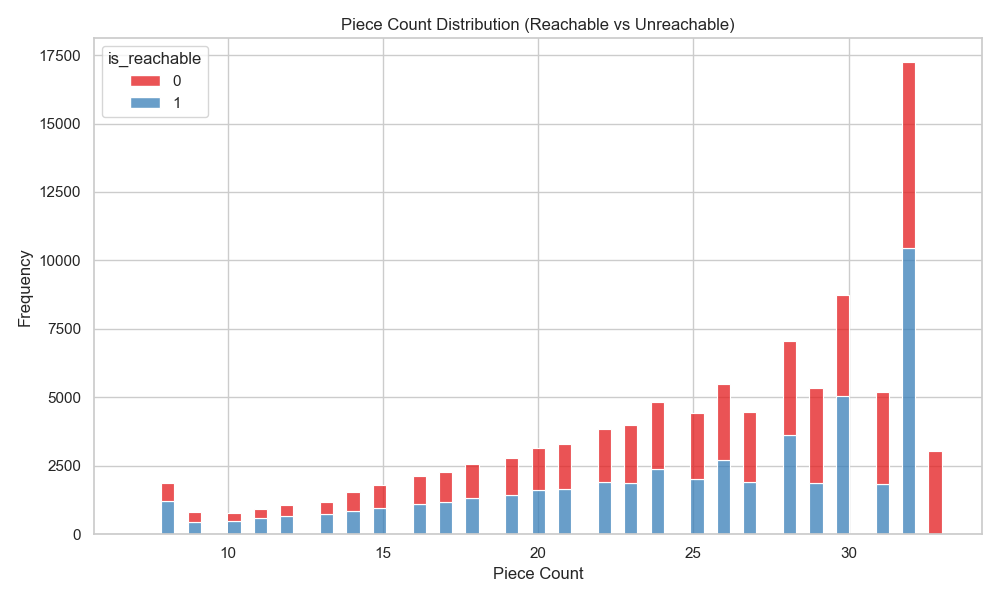
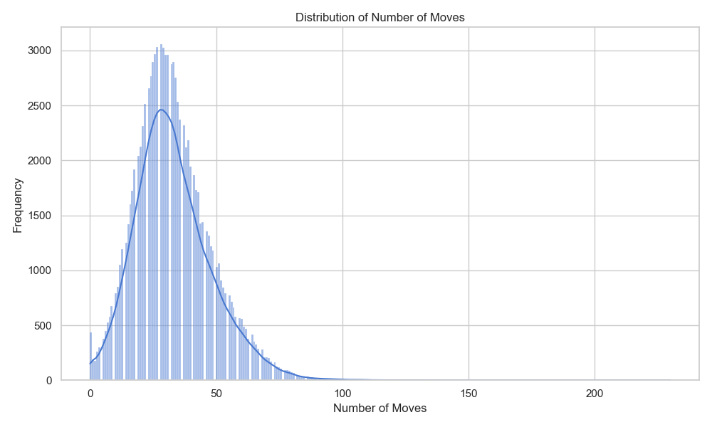
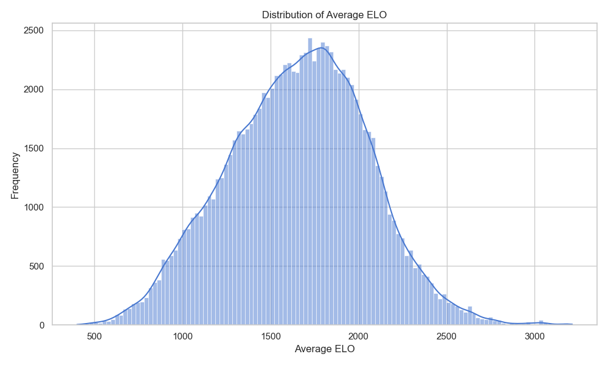
Reachable vs unreachable dataset splits
Piece count
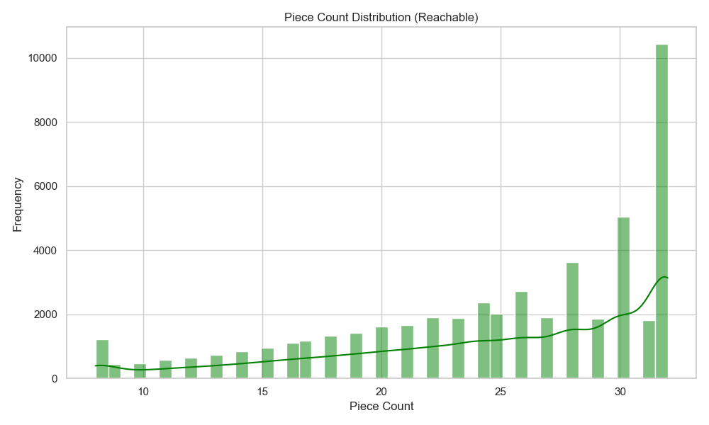
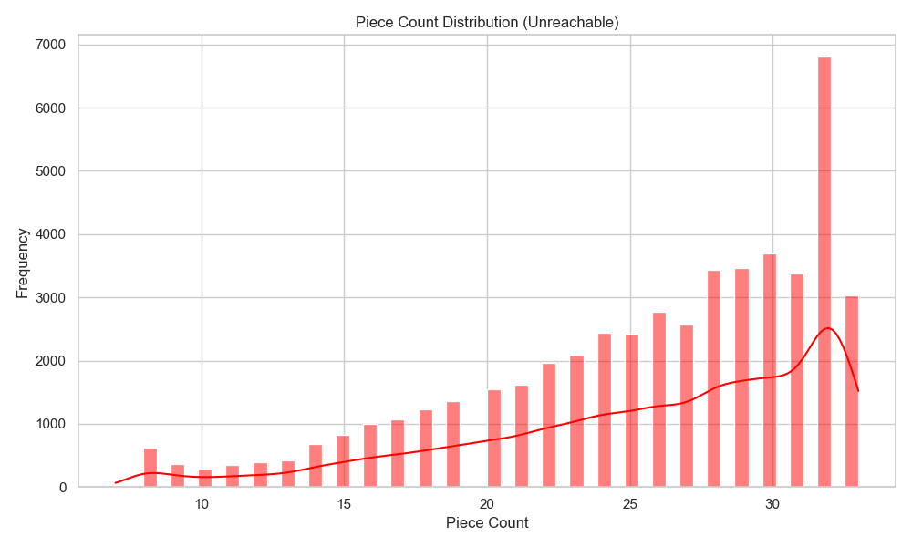
Number of moves
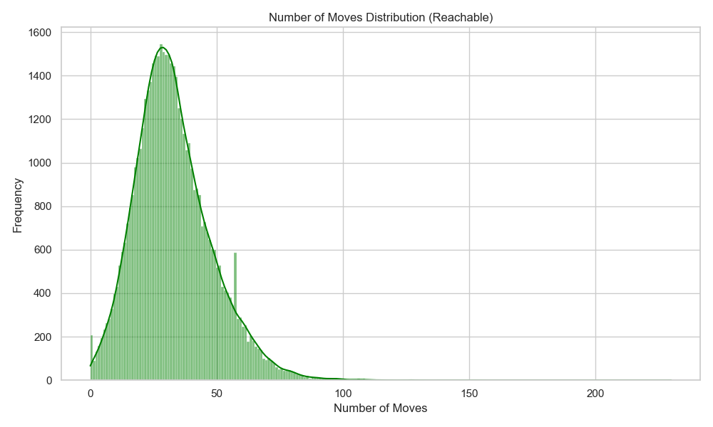
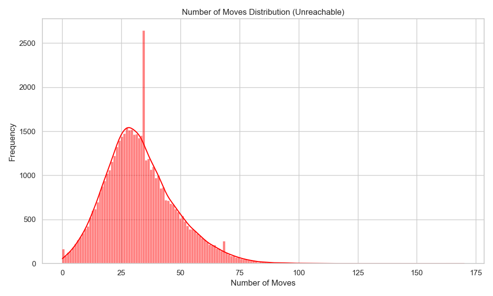
Average Elo
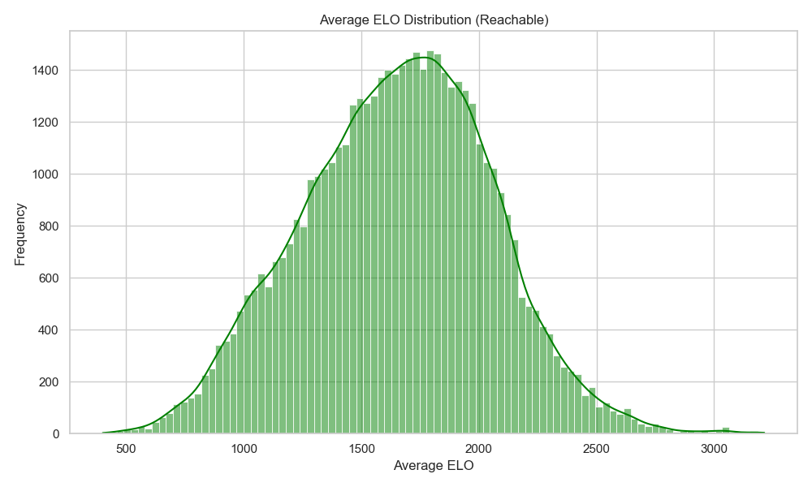
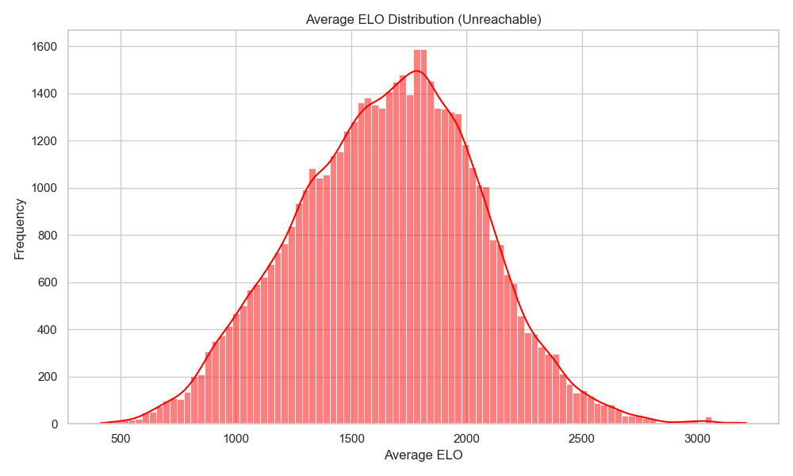
The synthetic unreachable data is generated by randomly selecting from our list of perturbations, resulting in the following distribution amongst the unreachable dataset portion:
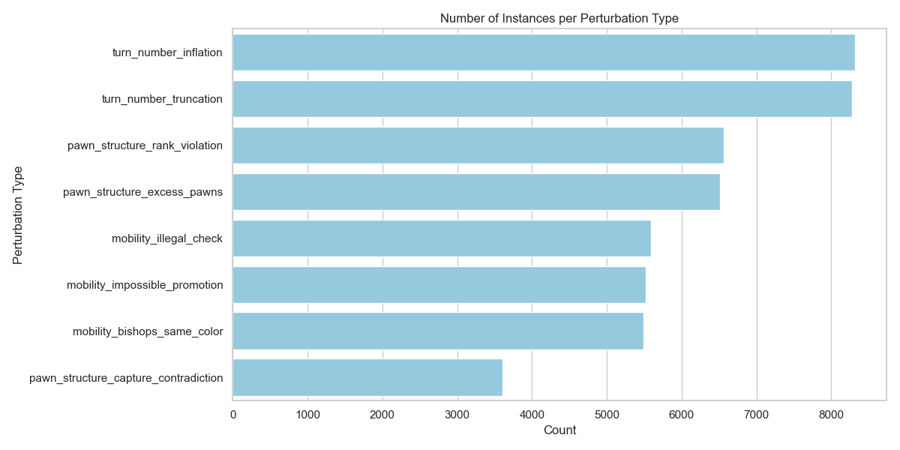
Neural Network Architecture
The project uses a custom convolutional neural network inspired by the ResNet-20 architecture, specifically adapted for the spatial dimensions of a chess board. The model processes the 13-channel bitboard to learn deep spatial features and piece relationships. The reason behind selecting this model is the following: data is not an issue, I am able to feed as many games as necessary to propagate an incredibly deep network. I find this depth necessary as the impossibilities are "hidden" in the sense that they are not immediately obvious, and require a deep "understanding" of chess to detect. VGGs are deep but require many more parameters; ResNet maintains the depth while staying relatively small. I'm sure this topology is not the only valid one, but for the literature I've read it seems to be a good starting point.
Topology Specifications
| Component | Specifications | Output resolution |
|---|---|---|
| Input | 13 channels (12 piece types + 1 turn number), 8×8 grid | 13×8×8 |
| Initial conv | 16 filters, 3×3, stride 1, BN, ReLU | 16×8×8 |
| Stage 1 | 3 ResNet blocks (16 filters, stride 1) | 16×8×8 |
| Stage 2 | 3 ResNet blocks (32 filters, stride 2 downsampling) | 32×4×4 |
| Stage 3 | 3 ResNet blocks (64 filters, stride 2 downsampling) | 64×2×2 |
| Classifier | Global average pooling, dense (2 units, softmax) | 2 |
ResNet block structure
Each standard residual block applies:
- Convolution (3×3, padding "same")
- Batch normalisation & ReLU
- Convolution (3×3, padding "same")
- Batch normalisation
- Skip connection addition
- ReLU
Note: for blocks that reduce dimensions between stages (stride 2), the skip connection applies a 1×1 convolution with stride 2 and batch normalisation to match the new filter count and spatial size.
Results & Evaluation
Simurgh successfully trained (albeit not for the full 30 epochs), achieving an overall ROC AUC score of 0.9959. This result is at a glance extremely promising, so let's take a look to verify.
Training Performance
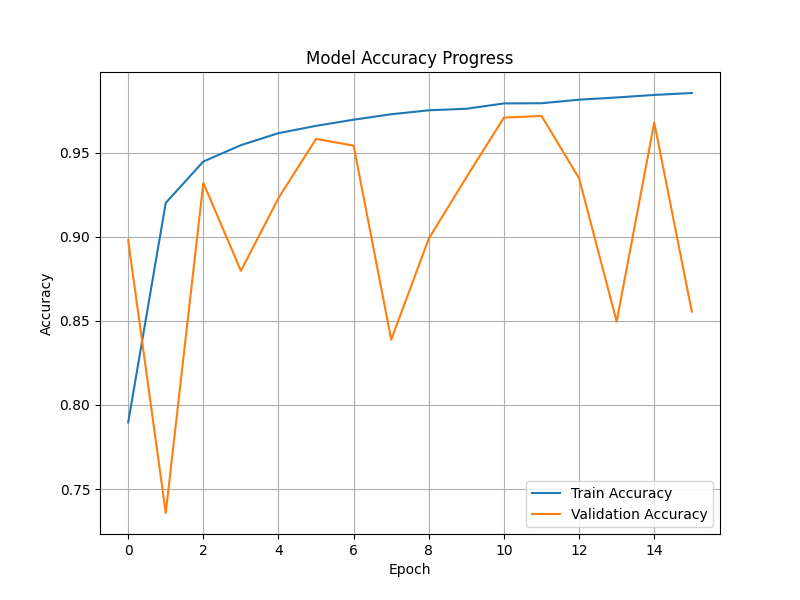
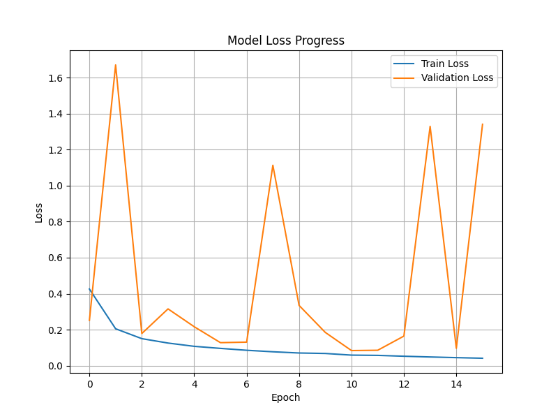
Our training metrics look rock solid, however our validation scores are sawtooth shaped, implying the learning rate was too high or the set was too small. There might be some performance left on the table due to this, so definitely a worthy lesson for next time.
Per-Perturbation Analysis
Below is a breakdown of the accuracy for each specific problem type.
| Category | Perturbation type | Count | Accuracy |
|---|---|---|---|
| Baseline | None (reachable) | 4987 | 98.24% |
| Pawn structure | Capture contradiction | 327 | 99.69% |
| Rank violation | 643 | 99.38% | |
| Excess pawns | 621 | 98.55% | |
| Turn number | Turn inflation | 858 | 99.77% |
| Turn truncation | 854 | 96.84% | |
| Mobility | Impossible promotion | 586 | 95.22% |
| Bishops same colour | 559 | 93.20% | |
| Illegal check | 540 | 87.04% |
Key insights
- Pawn structure violations are obvious. The network is almost flawless (>98.5%) at noticing impossible pawn configurations, such as pawns sitting on the 1st or 8th rank, contradictory captures needed to reach the file arrangement, or excess pawns. The spatial nature of convolutional networks handles this exceptionally well.
- Turn flow awareness. The network has successfully learned to correlate the number of pieces missing and typical piece development with the given turn number dimension. Identifying turn inflation (an overly high turn number given the crowded board) is near-perfect (99.77%). Turn truncation (too few turns for the amount of development/captures) is also highly accurate (96.84%).
- Complex mobility is the hardest. Detecting structural impossibilities that require deep backward-logical deduction — such as realising an illegal check sequence (87.04%) or spotting bishops on the same colour (93.20%) — is the model's weakest point. While accuracy is still impressively high, this highlights the difference between learning localised structural rules versus long-term procedural legality.
There are some things to note here — one could potentially tweak the severity of these perturbations, for example lowering the number of turns that we truncate or inflate. The reason behind the high values in this project is to ensure impossibility; if one were to delve into less and less obvious perturbations, a source of truth via retrograde analysis would be necessary.
Prediction confidence distributions
We can visualise the model's prediction confidence spread for each specific type of data (0.0 = completely confident it's unreachable, 1.0 = completely confident it's reachable).
Prediction distribution plots for each perturbation type
Baseline (reachable)
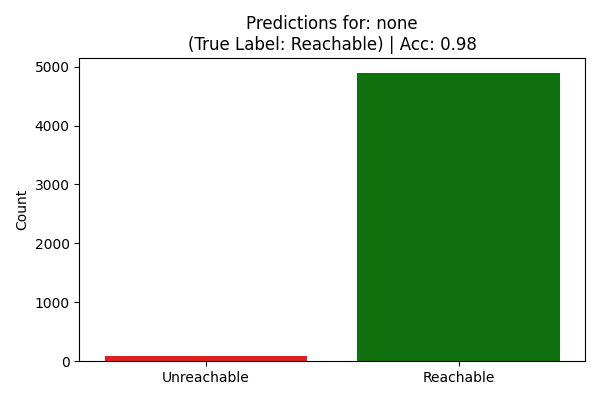
Pawn structure
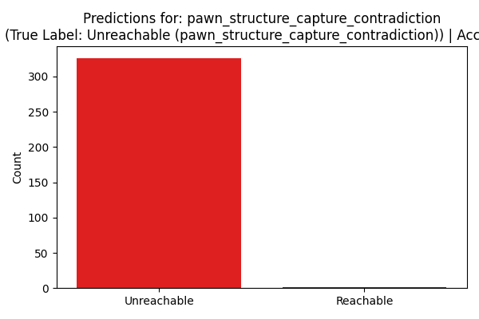
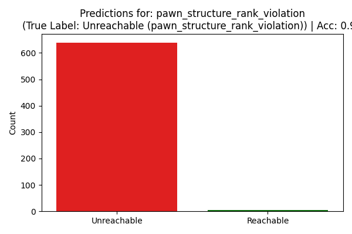
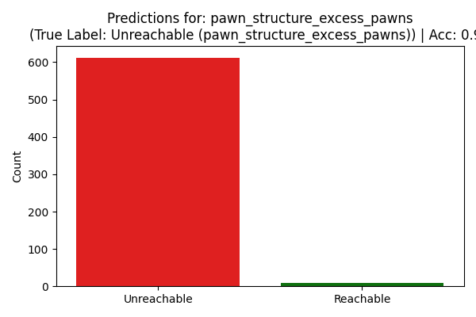
Turn number
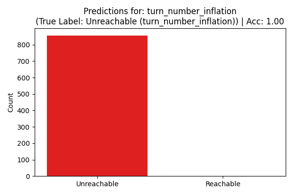
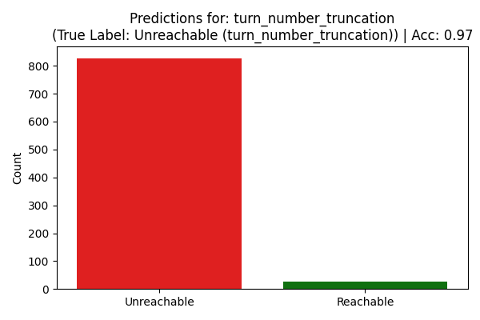
Mobility
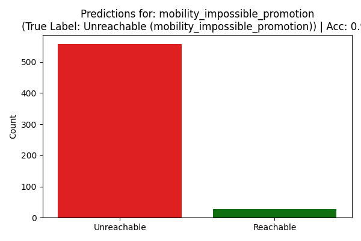
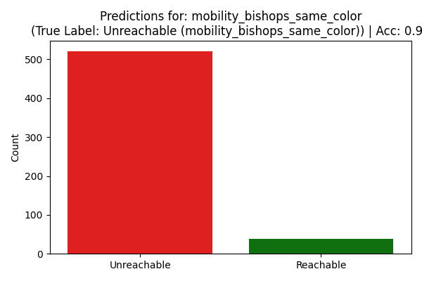
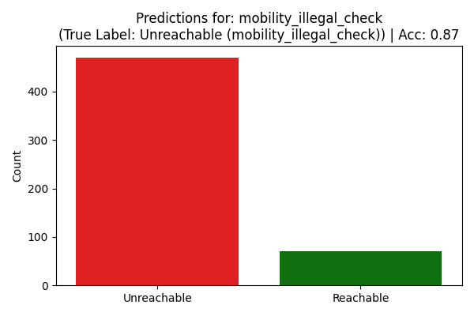
Ply vs confidence
By mapping the prediction confidence over the course of the turn number (ply), we can see how the model's certainty evolves as games go deeper.
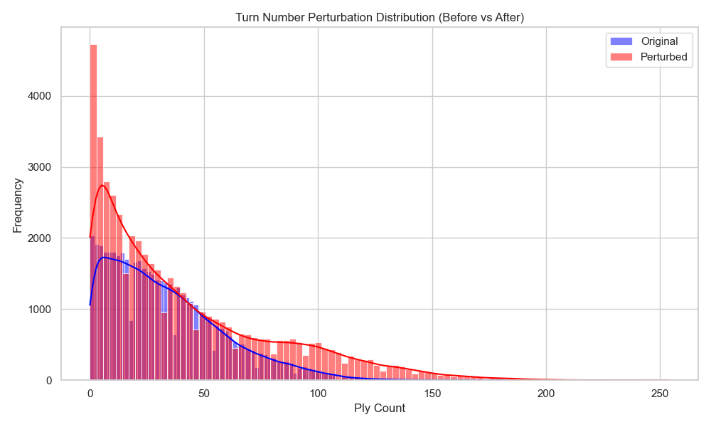
Specifically, observing the turn number perturbations shows how the model handles states with incorrect turn numbers over the progression of a match.
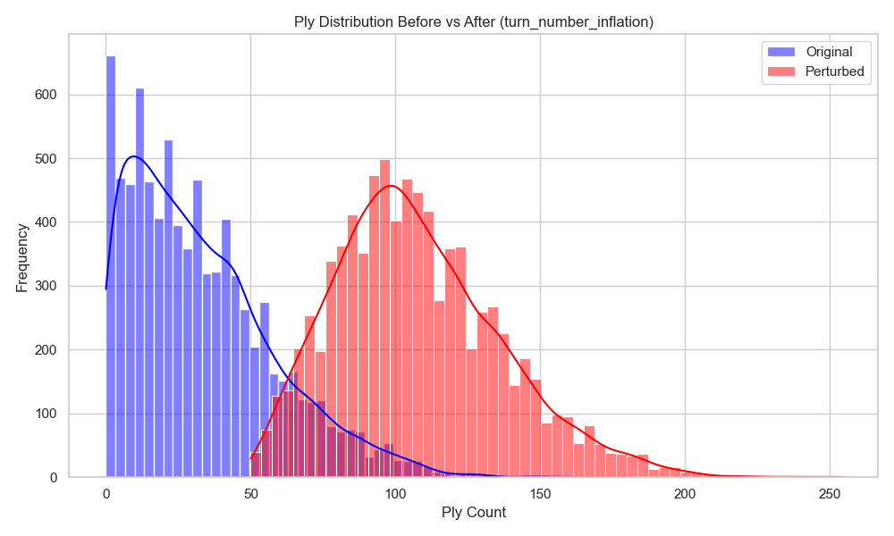
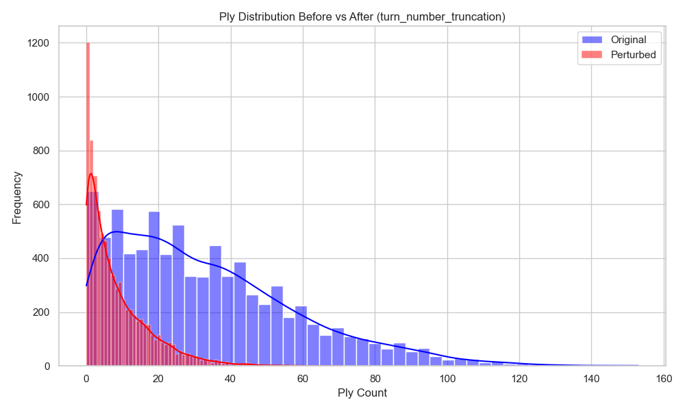
Aggregate Evaluation Metrics
To visualise the model's holistic performance, the confusion matrix and overall metrics distributions summarise its test set precision, recall, and decision boundaries.
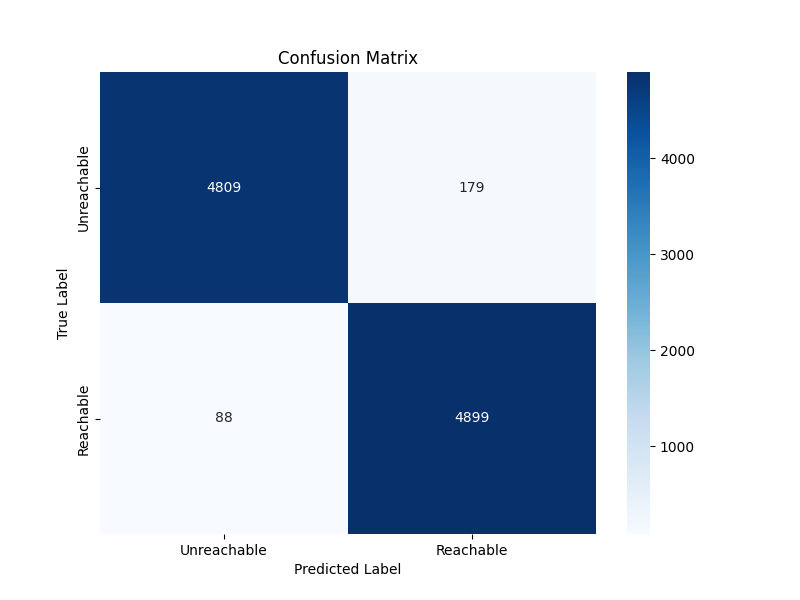
This just about concludes the project. Many precise details and decisions were not included in this description; doing that would balloon the document to thesis size. For now this is not on my radar, but maybe eventually I'll get around to formatting it in LaTeX and providing a fully fledged description.
Whatever the case — I think I've taken an interesting step into tackling a niche problem using an industry standard but previously unattempted (in this realm) solution. All with solid results, and room for future improvement.
Potential Future Goals
- Turn into a LaTeX doc
- Create a web interface for position evaluation
- Deploy as a hosted website for public access